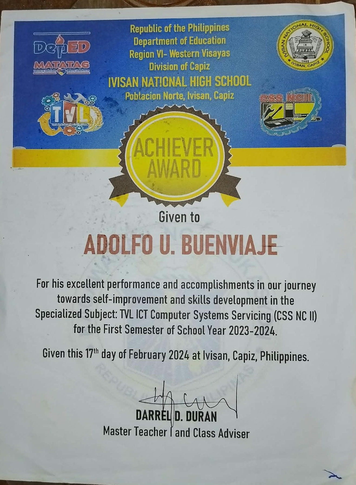
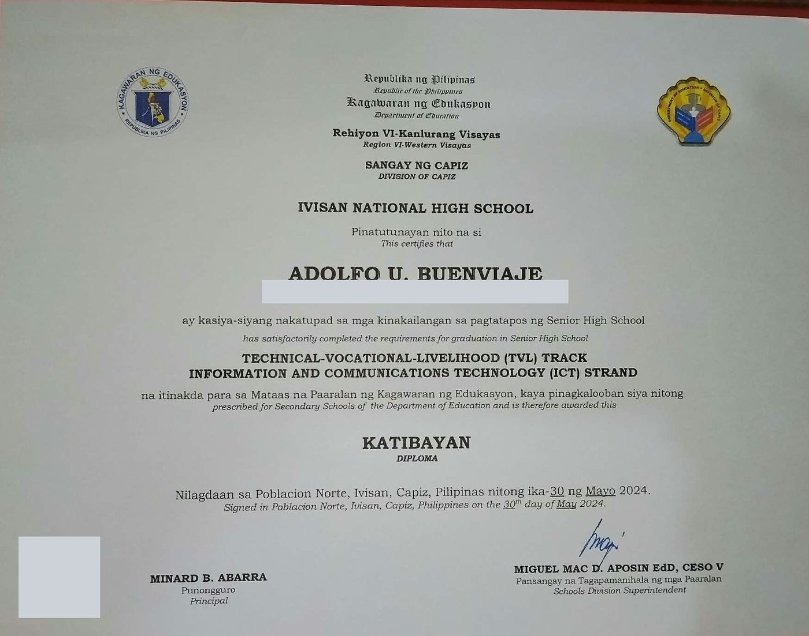
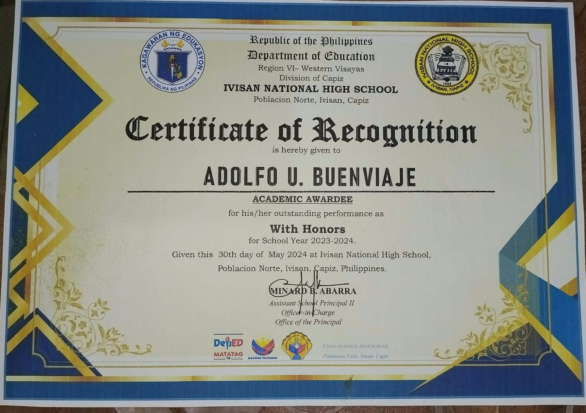
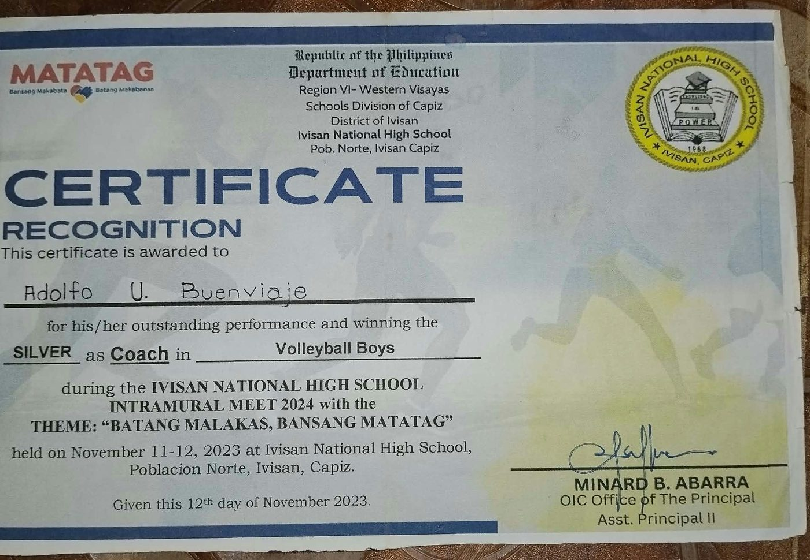
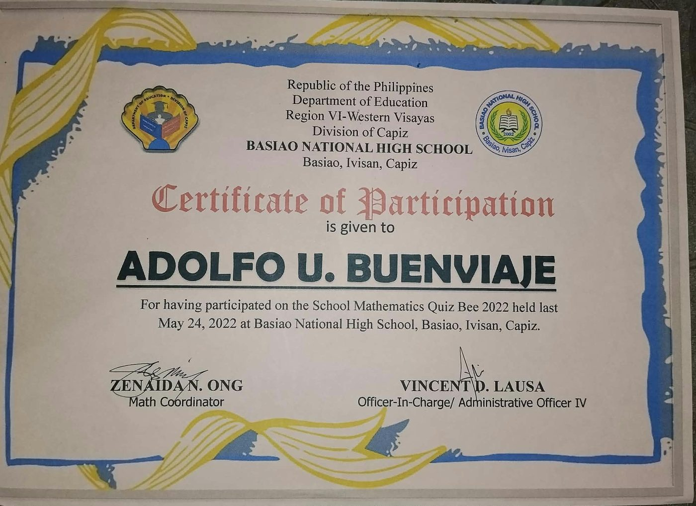
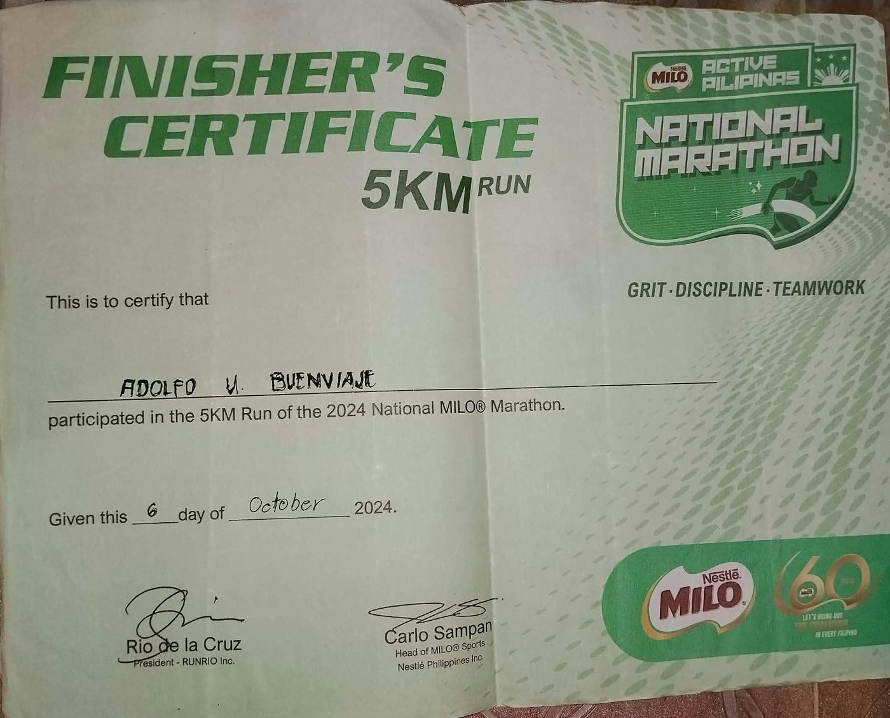

Hardware
- Computer hardware troubleshooting
- Basic computer assembly
- Hardware component identification
Ivisan, Capiz, Philippines
I am a
Third-year BSIT student with Senior High School training in Computer Systems Servicing and a CSS NC II certificate from TESDA. I focus on hardware troubleshooting, computer maintenance and basic network setup.
I am a third-year Bachelor of Science in Information Technology student with Senior High School training in Computer Systems Servicing (CSS). I am familiar with basic computer hardware and software troubleshooting, computer maintenance, software installation, operating system configuration and basic network setup. I am seeking an entry-level IT Support or Computer Technician role to apply my technical skills and continue developing hands-on experience.
Configured during CSS training and work immersion.
Installed and configured basic applications on lab computers.
Prepared, crimped and tested for networking activities.
Identified, assembled and cleaned during maintenance work.
Practiced identifying common computer hardware and software problems and applied basic troubleshooting procedures to resolve them.
Created Ethernet cables using proper wiring procedures, then practiced cable crimping and testing.
Performed basic cleaning and preventive maintenance, and checked computer units before use.
Filamer Christian University, Inc. Currently a third-year student.
Clipdata, Roxas City. Checked computers for hardware and software issues, assisted with maintenance and cleaning, installed and configured basic applications, prepared Ethernet cables, helped set up computers for laboratory use and followed safety procedures.
TESDA certification.
Ivisan National High School.





